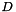

Computes and stores the eigensystem decomposition of a symmetric matrix. More...
#include <vnl_symmetric_eigensystem.h>
Public Member Functions | |
| vnl_symmetric_eigensystem (vnl_matrix< T > const &M) | |
| Solve real symmetric eigensystem $A x = x$. | |
| vnl_vector< T > | get_eigenvector (int i) const |
| Recover specified eigenvector after computation. | |
| T | get_eigenvalue (int i) const |
| Recover specified eigenvalue after computation. | |
| vnl_vector< T > | nullvector () const |
| Convenience method to get least-squares nullvector. | |
| vnl_matrix< T > | recompose () const |
| Return the matrix $V D V^$. | |
| T | determinant () const |
| return product of eigenvalues. | |
| vnl_matrix< T > | pinverse () const |
| return the pseudoinverse. | |
| vnl_matrix< T > | square_root () const |
| return the square root, if positive semi-definite. | |
| vnl_matrix< T > | inverse_square_root () const |
| return the inverse of the square root, if positive semi-definite. | |
| vnl_vector< T > | solve (vnl_vector< T > const &b) |
| Solve LS problem M x = b. | |
| void | solve (vnl_vector< T > const &b, vnl_vector< T > *x) |
| Solve LS problem M x = b. | |
Public Attributes | |
| vnl_matrix< T > | V |
| Public eigenvectors. | |
| vnl_diag_matrix< T > | D |
| Public eigenvalues. | |
Protected Attributes | |
| int | n_ |
Computes and stores the eigensystem decomposition of a symmetric matrix.
Definition at line 81 of file vnl_symmetric_eigensystem.h.
| vnl_symmetric_eigensystem< T >::vnl_symmetric_eigensystem | ( | vnl_matrix< T > const & | M | ) |
Solve real symmetric eigensystem $A x = x$.
Definition at line 140 of file vnl_symmetric_eigensystem.txx.
| T vnl_symmetric_eigensystem< T >::determinant | ( | ) | const |
return product of eigenvalues.
Definition at line 178 of file vnl_symmetric_eigensystem.txx.
| T vnl_symmetric_eigensystem< T >::get_eigenvalue | ( | int | i | ) | const |
Recover specified eigenvalue after computation.
Definition at line 159 of file vnl_symmetric_eigensystem.txx.
| vnl_vector< T > vnl_symmetric_eigensystem< T >::get_eigenvector | ( | int | i | ) | const |
Recover specified eigenvector after computation.
Definition at line 153 of file vnl_symmetric_eigensystem.txx.
| vnl_matrix< T > vnl_symmetric_eigensystem< T >::inverse_square_root | ( | ) | const |
return the inverse of the square root, if positive semi-definite.
Definition at line 219 of file vnl_symmetric_eigensystem.txx.
| vnl_vector<T> vnl_symmetric_eigensystem< T >::nullvector | ( | ) | const [inline] |
Convenience method to get least-squares nullvector.
It is deliberate that the signature is the same as on vnl_svd<T>.
Definition at line 111 of file vnl_symmetric_eigensystem.h.
| vnl_matrix< T > vnl_symmetric_eigensystem< T >::pinverse | ( | ) | const |
return the pseudoinverse.
Definition at line 188 of file vnl_symmetric_eigensystem.txx.
| vnl_matrix<T> vnl_symmetric_eigensystem< T >::recompose | ( | ) | const [inline] |
Return the matrix $V D V^$.
This can be useful if you've modified . So an inverse is obtained using
vnl_symmetric_eigensystem} eig(A); eig.D.invert_in_place}(); vnl_matrix<double> Ainverse = eig.recompose();
Definition at line 121 of file vnl_symmetric_eigensystem.h.
| vnl_vector< T > vnl_symmetric_eigensystem< T >::solve | ( | vnl_vector< T > const & | b | ) |
Solve LS problem M x = b.
Definition at line 165 of file vnl_symmetric_eigensystem.txx.
| void vnl_symmetric_eigensystem< T >::solve | ( | vnl_vector< T > const & | b, |
| vnl_vector< T > * | x | ||
| ) | [inline] |
Solve LS problem M x = b.
Definition at line 139 of file vnl_symmetric_eigensystem.h.
| vnl_matrix< T > vnl_symmetric_eigensystem< T >::square_root | ( | ) | const |
return the square root, if positive semi-definite.
Definition at line 203 of file vnl_symmetric_eigensystem.txx.
| vnl_diag_matrix<T> vnl_symmetric_eigensystem< T >::D |
Public eigenvalues.
After construction, D contains the eigenvalues, sorted as described above. Note that D is a vnl_diag_matrix, and is therefore stored as a vcl_vector while behaving as a matrix.
Definition at line 101 of file vnl_symmetric_eigensystem.h.
int vnl_symmetric_eigensystem< T >::n_ [protected] |
Definition at line 90 of file vnl_symmetric_eigensystem.h.
| vnl_matrix<T> vnl_symmetric_eigensystem< T >::V |
Public eigenvectors.
After construction, the columns of V are the eigenvectors, sorted by increasing eigenvalue, from most negative to most positive.
Definition at line 96 of file vnl_symmetric_eigensystem.h.
1.7.5.1